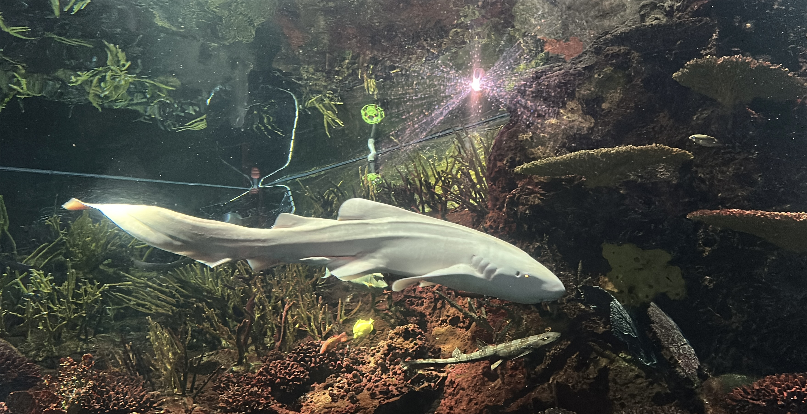

I am primarily taking MEDPL 150 as an elective. I chose this class because I wanted to develop new skills and challenge my creativity. I am generally looking forward to learning how to navigate platforms like Illustrator since I lack familiarity. I am excited to learn about the components of design that the average person may overlook, such as color choices. Most of all, I am interested in learning how to create an animation of my own. My experience with visual arts is limited but I have experimented with physical and digital media in the past. The artwork I have created has typically been through the use of procreate, paint, oil pastels, charcoal, and cloth. Some of the artists I enjoy are Julia wolf and Tomorrow x Together because of their visual concepts and aesthetics.
Reading Reflections